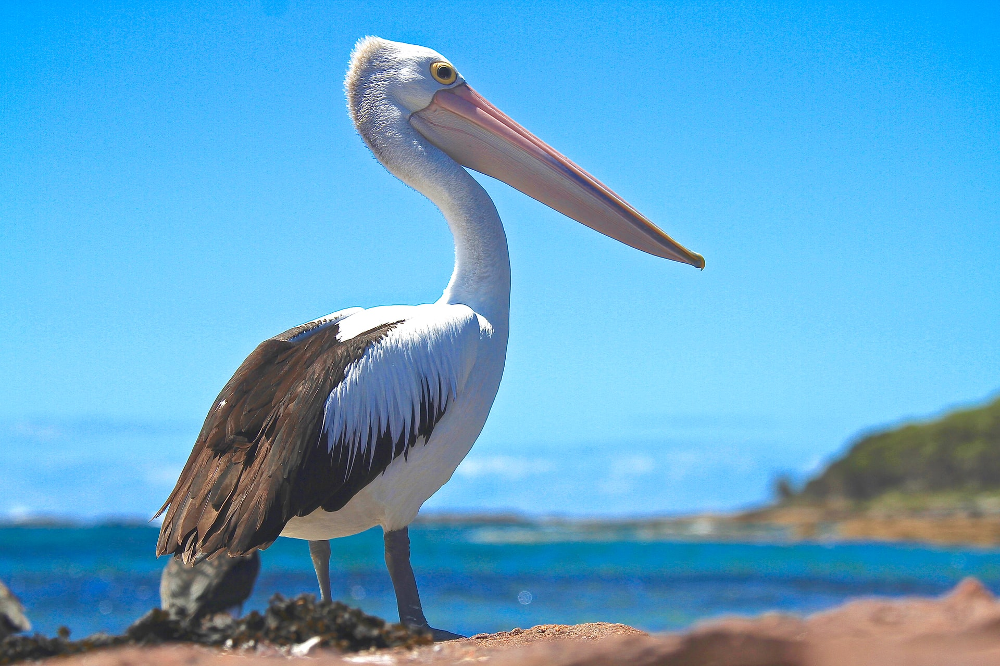
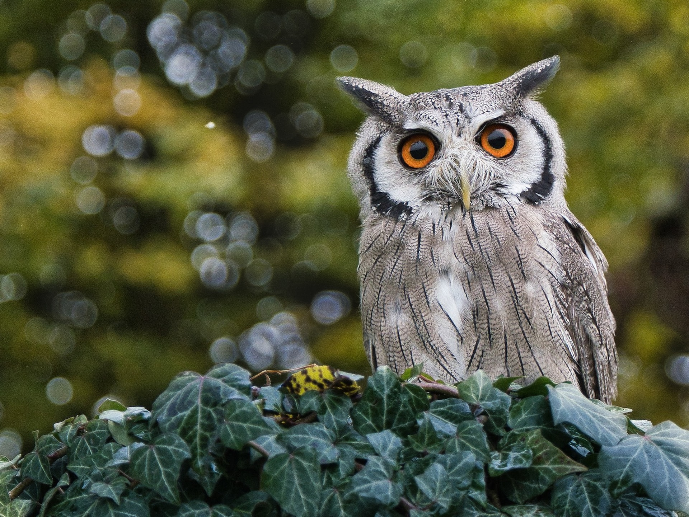
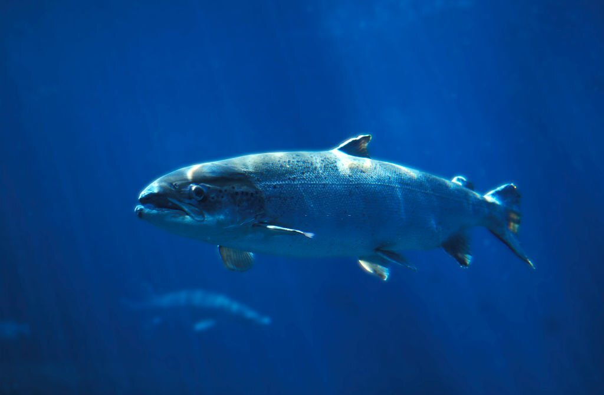
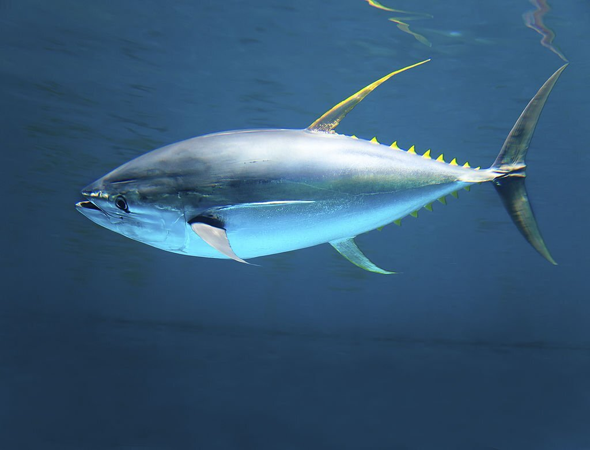

Mammals
Most mammals are intelligent
Dog
Due to their long association with humans, dogs have expanded to a large number
of domestic individuals and gained the ability to thrive on a starch-rich
diet that would be inadequate for other canids. Over the millennia, dogs
became uniquely adapted to human behavior.
Cat
The cat is similar in anatomy to the other felid species: it has a strong flexible
body, quick reflexes, sharp teeth and retractable claws adapted to killing small prey.
Its night vision and sense of smell are well developed.
 Jump to top
Jump to top
Birds
Pelican
Pelicans are a genus of large water birds that make up the
family Pelecanidae. They are characterized by a long beak and
a large throat pouch used for catching prey and draining water
from the scooped-up contents before swallowing.

Owl
Owls are birds from the order Strigiformes, which includes over
200 species of mostly solitary and nocturnal birds of prey typified
by an upright stance, a large, broad head, binocular vision,
binaural hearing, sharp talons, and feathers adapted for silent
flight.

Jump to top
Fishes
Salmon
Typically, salmon are anadromous: they hatch in fresh water,
migrate to the ocean, then return to fresh water to reproduce.
However, populations of several species are restricted to fresh
water throughout their lives.

Tuna
Tuna, opah and mackerel sharks are the only species of fish
that can maintain a body temperature higher than that of the
surrounding water. An active and agile predator, the tuna has
a sleek, streamlined body, and is among the fastest-swimming
pelagic fish.

Comparison
| Type |
Calories |
Energy |
Total Fat |
| Salmon |
231 kcal |
967 KJ |
13.38 g |
| Tuna |
130 kcal |
543 KJ |
0.59 g |